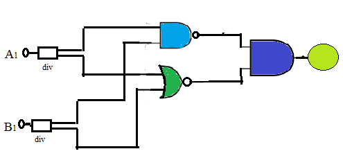
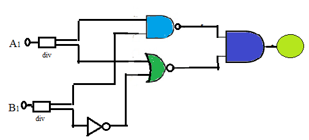
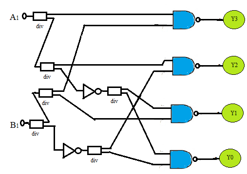
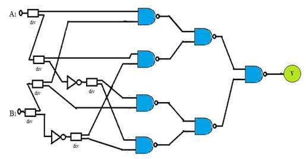

PRE-TEST
Perform the following assignments using simulator and discuss the results in your peer groups or with your Faculty:
|
Assignment #1 |
a. Prepare a truth table for the following figure:  b. Write down the equation for the output. Note: The div block (Y connector) represented in the above diagram is to indicate that a particular input say A1 is connected as input to both the gates (NAND & NOR).The output of AND gate is given to a Green LED. |
|
|
Assignment #2 |
Build the logic circuit in Assignment #1. Simulate and Verify the function of the circuit. Can you suggest which logic gate can replace this entire logic circuit? |
|
|
Assignment #3 |
a. Build the logic circuit given below:  b. Write down the equation for the output. c. Simulate and Verify the operation of the circuit. |
|
|
Assignment #4 |
a. Build the logic circuit given below:  b. Write down the output equations for all four outputs. c. Simulate and Verify the operation of the circuit. d. State does this circuit work as a Decoder? |
|
|
Assignment #5 |
A novice was building an application in phases; while doing so he built the following digital circuit: a. Build this circuit and observe the output. b. Analyse the circuit and write the final simplified expression for the output Y. c. What are your suggestions to the novice about the circuit? |
|
Assignment #6 |
Refer Assignment #5. If all NAND gates are replaced by NOR gates, what is the output Y? a. Logic 0 b. Logic 1 c. Y = A1.B1 d. Y = A1 + B1 |
|
Assignment #7 |
The performance of a digital circuit to be used in printing machine is described using a Boolean expression: Y = AC + BC' + A'BC a. Analyse and Prepare a function table for the same. b. Build and Simulate the above circuit and verify its operation. |
|
Assignment #8 |
a. Draw the circuit diagram to implement the expression: Y = (A + B)(B' + C) b. Implement the circuit, simulate and verify the output. |
|
Assignment #9 |
a. Draw the circuit diagram that implements the expression: Y = A'BC(A+D)' using gates with not more than two inputs. b. Simulate the circuit and observe the output. |
|
Assignment #10 |
Application: Majority Circuit a. Design a logic circuit that has three inputs A, B and C and whose output will be HIGH only when a majority of the inputs are HIGH. b. Implement the Majority circuit using two-input: i) AOI logic (AND, OR, Invert gates only). ii) NAND gates only. iii) Using NOR gates only. c. State which of the above designs requires a minimum gate count?
|